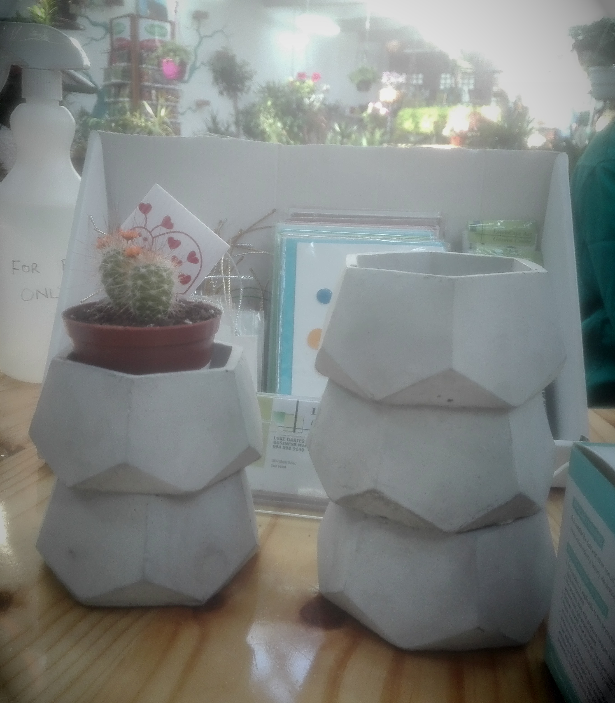
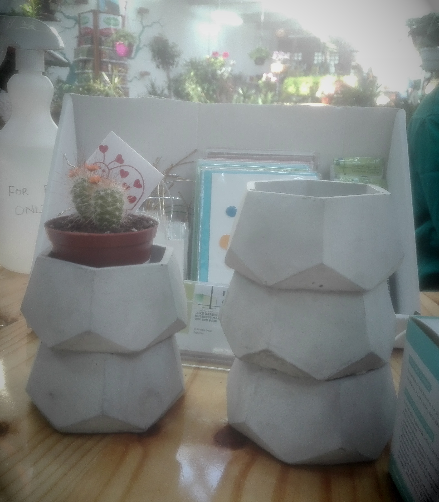

Home
About
More Items
Where and When
Contact

Home
About
More Items
Where and When
Contact
BangarangCrafts
In Stock

Item Info
Cement pot Width: 12cm Height: 5.5cm Buy this item now on Facebook. Or contact seller for direct buying: 0765202303 christo.bangarang@gmail.com
Item Info
Cement Deathstar(Out of stck) Width: 6cm Height: 6cm Buy this item now on bid or buy. Or contact seller for direct buying: 0765202303 christo.bangarang@gmail.com
More Items
About
This website is dedicated to the love of craft and supplying you the customer with quality craft items at affordable prices. We take pride in what we do and will make sure of a wonderful experience.
Where and When
16 September 2020 We will be trading alongside We Sell Toys at Milnerton FleaMarket Saturday 19 September from 9am - 2pm and Sunday 20 September from 9am - 3pm. Weather might influence trading times, check out weather report here
10 September 2020 We will be trading alongside We Sell Toys at Milnerton FleaMarket Saturday 12 September from 9am - 2pm and Sunday 13 September from 9am - 3pm. Weather might influence trading times, check out weather report here
02 September 2020 We will be trading alongside We Sell Toys at Milnerton FleaMarket Saturday 04 September from 9am - 2pm and Sunday 05 September from 9am - 3pm. Weather might influence trading times, check out weather report here
28 August 2020 We will be trading alongside We Sell Toys at Milnerton FleaMarket Saturday 29 August from 9am - 2pm and Sunday 30 August from 9am - 3pm. Weather might influence trading times, check out weather report here
19 August 2020 We will be trading alongside We Sell Toys at Milnerton FleaMarket Saturday 22 August from 9am - 2pm and Sunday 23 August from 9am - 3pm. Weather might influence trading times, check out weather report here
12 August 2020 We will be trading alongside We Sell Toys at Milnerton FleaMarket Saturday 15 August from 9am - 2pm and Sunday 16 August from 9am - 3pm. Weather might influence trading times, check out weather report here
07 August 2020 We will be trading alongside We Sell Toys at Milnerton FleaMarket Saturday 8 August from 9am - 2pm and Sunday 9 August from 9am - 3pm. Weather might influence trading times, check out weather report here
29 July 2020 We will be trading alongside We Sell Toys at Milnerton FleaMarket Saturday 1 August from 9am - 2pm and Sunday 2 August from 9am - 3pm. Weather might influence trading times, check out weather report here
22 July 2020 We will be trading at Milnerton FleaMarket Saturday 25 July from 9am - 2pm and Sunday 26 July from 9am - 3pm. Weather might influence trading times, check out weather report here
16 July 2020 We will be trading at Milnerton FleaMarket Saturday 18 July from 9am - 2pm and Sunday 19 July from 9am - 3pm. Weather might influence trading times, check out weather report here
08 July 2020 We will be trading at Milnerton FleaMarket Saturday 11 July from 9am - 2pm and Sunday 12 July from 9am - 3pm. Weather might influence trading times, check out weather report here
02 July 2020 We will be trading at Milnerton FleaMarket Saturday 04 July from 9am - 2pm and Sunday 05 July from 9am - 3pm.
25 June 2020 We will be trading at Milnerton FleaMarket Saturday 27 June from 9am - 2pm and Sunday 28 June from 9am - 3pm.
15 June 2020 We will be trading at Milnerton FleaMarket Saturday 20 June from 9am - 2pm and Sunday 21 June from 9am - 3pm.
13 June 2020 We will be trading at Milnerton FleaMarket Saturday from 9am - 2pm and Sunday from 9am - 3pm.
Contact
christo.bangarang@gmail.com 0765202303
 
